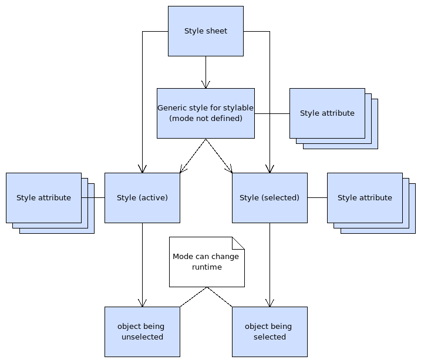
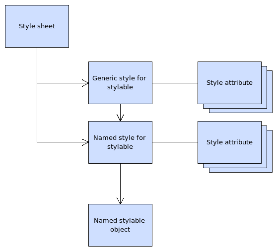
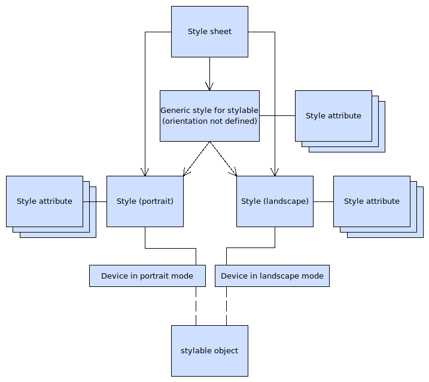

| Home · All Classes · Main Classes · Deprecated |
In MeeGo Touch the style of a widget may have a different style depending on the type of its parent widget. For example, you can define a custom style for a button in the view menu, so that it it looks different if its parent is a view menu.
Consider using the parent-child relationship in styling, when you want to have a custom style for the widgets inside another widget. Good examples are the children of composite widgets, such as the label and background of a list item, and button and text in a view menu.
It is also possible to style objects depending of their internal 'mode'. The word mode is actually quite flexible in this concept, meaning that modes can be introduced by the developer as needed. Whenever your stylable object changes its state, it notifies the style about it and the style attribute values are then automatically changed to reflect the new state. For example, a list item can have different modes based on its selection state; there is black text on a white background when the item has not been selected and white text on a blue background when the item is selected.

Styling using mode
Consider using the mode in styling, when you have clearly different states for your stylable object. Good examples are states selected/unselected, open/closed, night/day, and so on.
Object naming means that you give a name for your stylable object. It allows you to define a custom set of attributes for that specific object in your style sheet. Basically, your object is identified by the system and the custom styling is then applied to it. The name acts as an identifier for your stylable object.

Styling using object naming
Use object naming when you need to assign a unique style to a unique object. An example would be individual buttons on a dial pad, if each of them has a distinct style. If you have a group of objects that need to be styled in a similar (but custom) way, consider using another method (like parent-child-relationship) for it instead.
The style system supports styling in both portrait and landscape orientation. It allows you to have different widget styles for both screen orientations. The style objects are automatically updated to reflect the new orientation when the device is rotated by the user.

Styling using orientation
Use the orientation parameter when, for example, you have some margin and spacing values for landscape rotation and you want to decrease the values in portrait mode.
| Copyright © 2010 Nokia Corporation | MeeGo Touch |